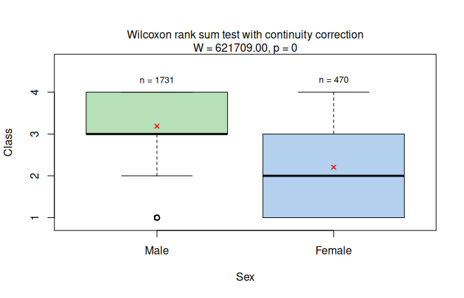
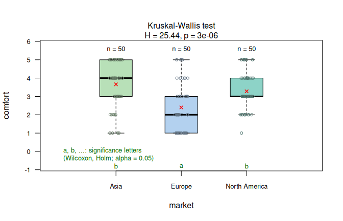
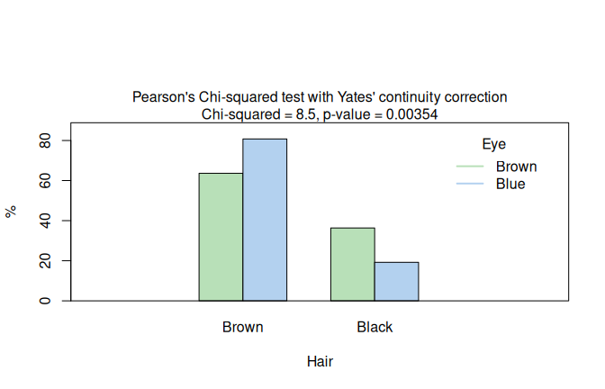
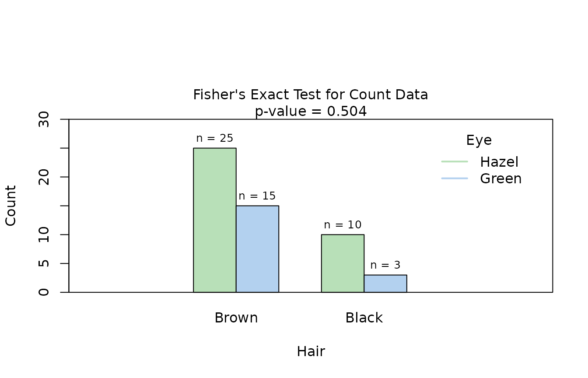
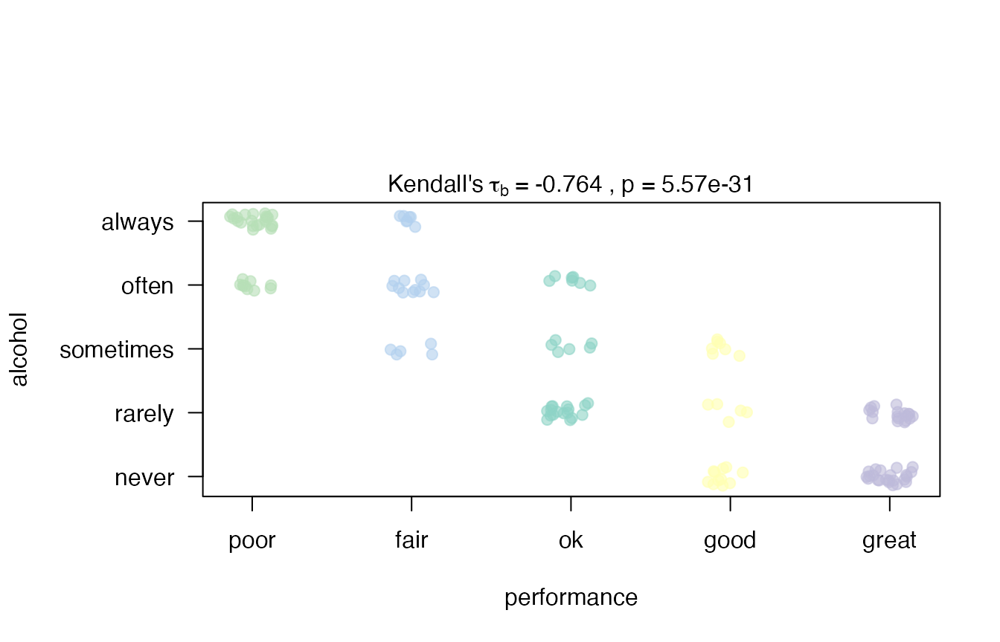
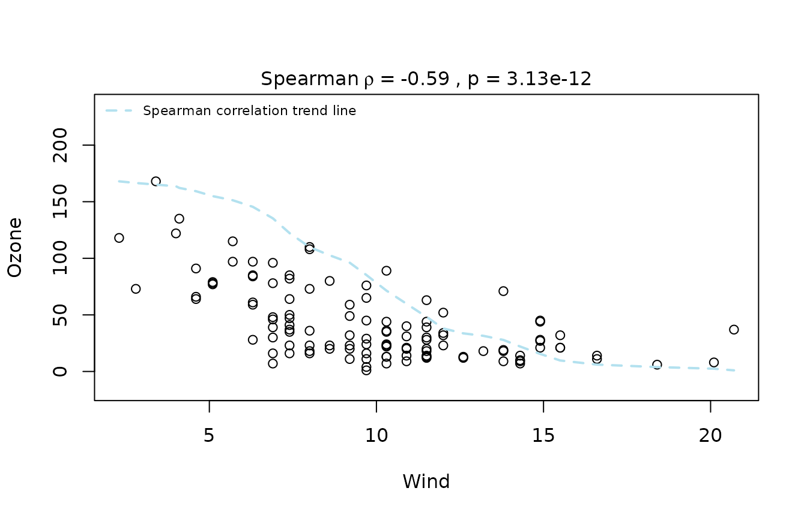

visStatistics: The right test, visualised
Sabine Schilling
2026-05-30
Source:vignettes/visStatistics.Rmd
visStatistics.RmdAbstract
visStatistics provides a workflow for routine
two-variable frequentist inference in R. Given two vectors,
visstat() first dispatches by variable classes, factor
levels, sample sizes, expected cell counts, and explicit user
options.
Its main assumption-driven branch concerns tests of central tendency for a numeric response grouped by a factor. There, sample size and residual diagnostics from a fitted linear model choose between rank-based and mean-based tests and, within the latter, between equal-variance and Welch-type variants.
The output is deliberately visual: diagnostic plots are shown together with assumption-test p-values, the selected test, effect size, and post-hoc results where applicable. This shifts attention from ad-hoc test selection to visual diagnostic assessment and statistical interpretation.
The automated workflow of visStatistics is particularly
suited for server-side R applications, where users select variables
through a web interface and receive a complete visual statistical
analysis. It also supports time-constrained work such as statistical
consulting, where less time spent on test selection leaves more room for
interpretation.
Introduction
In the frequentist tradition, most routine data analyses reduce to a
comparatively small set of inferential frameworks, including group
comparisons, regression models and contingency-table analyses Hayat et al. (2017); their correct use depends on
assumptions that are often checked informally or not at all.
visStatistics targets this gap by making routine
frequentist test selection explicit, assumption-aware, visual, and
reproducible. Rather than requiring users to choose the test function
first, visstat() starts from two variables and routes
common two-variable settings through a fixed decision workflow. It
selects a test from the variable classes, distributional assumptions,
sample size, and expected cell counts; displays the diagnostics that led
to the selected route; and returns an R object whose
print() and summary() methods expose the
complete test results, including the reported effect size. The scripted
workflow is well suited for browser-based applications where sensitive
data (such as highly confidential medical records) are stored securely
on a server and cannot be directly accessed by users. This approach was
already successfully applied to develop a medical scoring tool (Bijlenga et al.
2017).
For group comparisons, packages with related scope include
compareGroups (Subirana et al. 2014),
boxTest (Sau
et al. 2025), autotestR (Garcia 2026),
and automatedtests (Zeevat 2025).
compareGroups is primarily designed for bivariate
descriptive tables and reports, not diagnostic plots and test
visualisations. boxTest covers only the two-group
numeric-response case. autotestR provides automated
recommendations for t-tests, ANOVA, correlation, and contingency-table
analyses. automatedtests provides the broadest routing
among these packages, including one-sample, paired, repeated-measures,
regression, correlation, and contingency-table cases.
For tests within the general linear-model framework like Student’s
t-test or Fisher’s ANOVA and linear regression, the normality assumption
concerns the model residual errors (each observation minus its predicted
value), but none of these packages checks normality on the residuals of
the fitted linear model. Instead, autotestR and
boxTest test the response separately within groups, whereas
automatedtests and compareGroups the response
variable as a whole, ignoring the grouping.
Among the reviewed automated test-selection packages,
visStatistics is thus the only one that bases the
central-tendency route on explicit residual diagnostics from the common
linear model rather than on marginal or groupwise normality checks. The
package is deliberately limited to common two-variable settings in which
the route can be visualised and audited: pretesting where applied,
residual-based diagnostics for the linear-model branch, the selected
test, full test statistics, effect size, result plots, and post-hoc
comparisons where required.
Purpose of the vignette
The purpose of this vignette is two-fold: On the one hand side it
explains the decision logic of visstat() (Section
@ref(sec:decision)) and illustrates it on examples for each branch of
the decision logic (Section @ref(sec:examples)). On the other side it
serves as a text-book like reference of all implmented tests,
correlationd and effect-sizes (Appendices
@ref(sec:tests)–@ref(sec:effect-size)), thus that the user easily
understands the output with out having to consult the code or
literature.
Package overview
visStatistics (Schilling 2026) is available on CRAN as the
latest stable release. This article refers to the latest development
state in the GitHub
repository, which may include minor changes between CRAN
submissions.
Given two input vectors x and y of class
"numeric", "integer", or
"factor", its main function visstat() can be
called in two equivalent forms:
An exemplary function call is
#Standardised form
visstat(npk$block,npk$yield)From this single entry point, the package automatically selects among the implemented hypothesis tests,
t.test(), wilcox.test(),
aov(), oneway.test(),
kruskal.test(), chisq.test(),
fisher.test(), lm().
The underlying selection algorithm is detailed in Section
@ref(sec:decision). The function returns an object of class
"visstat" with print(),
summary(), and plot() methods described in
Section @ref(sec:visstat-methods)
Among the returned components, visstat() reports the
p-value of the selected test and an effect_size field
(Section @ref(sec:p-values-effect-sizes)).
Unless stated otherwise, R function names for selected tests refer to
functions from the stats package distributed with R (R Core Team
2026).
To reduce dependencies on other packages, visStatistics
implements levene.test() for the variance gate in grouped
mean-based tests (Eq. @ref(eq:levene-f)), bp.test() for
regression diagnostics (Eq. @ref(eq:breusch-pagan-bp)), and
games.howell() for Welch-ANOVA post-hoc comparisons
(Eq. @ref(eq:games-howell-t)).
Definitions of all implemented test statistics, rank-correlation coefficients, and effect sizes are given in Appendices @ref(sec:tests)–@ref(sec:rank-correlations).
Decision logic
The decision logic of visstat() is layered: The general
branching, summarised in Figure @ref(fig:overview), is driven by the
class and number of factor levels of its input vectors.
Only for a numeric response with a categorical predictor, the selection among tests of central tendency further depends on group-specific sample size and residual diagnostics from a fitted linear model (Section @ref(sec:route-1)).
Top-level routing by input class
The main branching logic consists of four default routes summarised in Figure @ref(fig:overview).
- Route 1. Numeric responses with categorical predictors enter the central-tendency branch detailed in Section @ref(sec:route-1).
- Route 2. Ordered categorical responses with categorical predictors follow the non-parametric Wilcoxon or Kruskal–Wallis route (Section @ref(sec:route-2)).
- Route 3. Two numeric variables enter simple linear regression (Section @ref(sec:route-3)).
- Route 4. Two unordered factors enter the proportion-comparison branch (Section @ref(sec:route-4)).
Rank-correlation analyses are optional user-requested alternatives
for ordered–ordered and numeric–numeric inputs. They are reached only
when correlation = TRUE is set explicitly.

Overview of all implemented tests selected based on input class.
General linear model framework
Student’s t-test, Fisher’s ANOVA (both belonging to Route 1) and simple linear regression (in Route 3) are special cases of the general linear model framework (Thompson 2015) and share the same model assumptions: the expected value of the response is a linear function of the predictors, the error terms are mutually independent and normally distributed with expectation 0, and the error variance is constant.
Residuals are the empirical realisations of these error terms. To
check whether the residuals fulfil the linear model assumptions,
visstat() both visualises (see Section
@ref(sec:graphical)) and formally assesses the normality and
homoscedasticity of the residuals by assumption tests (see Section
@ref(sec:assumption-tests)) for tests belonging to Route 1 and Route 3.
Note that only in Route 1, \(p\)-values
derived from these assumption tests influence the test selection
(Section @ref(sec:route-1)).
Below, Section @ref(sec:math-glm) formally defines the general linear model framework in the context of the implemented tests.
Model definition
In the general linear model, a response \(Y\) is modelled as a linear combination of \(k-1\) predictors \(x_j\). The general linear model for observation \(i,\;i = 1, \ldots, N\) is then
\[\begin{equation} (\#eq:glm) Y_i = \beta_0 + \beta_1 x_{i1} + \cdots + \beta_{k-1} x_{i,k-1} + \varepsilon_i, \end{equation}\]
where \(Y_i\) is the response for observation \(i\), \(x_{ij}\) is the value of predictor \(j\) for observation \(i\), \(\beta_0, \beta_1, \ldots, \beta_{k-1}\) are the \(k\) parameters, and \(\varepsilon_i\) is the model error term. The model error terms \(\varepsilon_i\) are assumed to be independent and normally distributed with expectation 0 and constant variance \(\sigma^2\), in short \[\varepsilon_i \sim \mathscr{N}(0, \sigma^2), \quad\mathrm{mutually\; independent} \]
The variance \(\sigma^2\) represents the variation of the data on the regression , \(Var(Y_i)=\sigma^2\), as both the (unknown) model parameters as well as predictors are not random.
From Eq. @ref(eq:glm), the special cases used by
visstat() follow from the predictor structure:
Student’s t-test uses one binary indicator variable \(x_{i1}\), with \(x_{i1}=0\) for group 1 and \(x_{i1}=1\) for group 2. Let \(\mu_1\) and \(\mu_2\) denote the expected values in the two population groups. For the expected values of the response, we then obtain \[E(Y_i \mid x_{i1}=0)=\mu_1=\beta_0\] for group 1 and \[E(Y_i \mid x_{i1}=1)=\mu_2=\beta_0+\beta_1\] for group 2. Testing \(H_0: \beta_1 = 0\) is therefore equivalent to testing \(H_0: \mu_1 = \mu_2\).
Fisher’s ANOVA generalises this coding to \(k-1\) binary indicator variables for \(k\) groups; testing \(H_0: \beta_1 = \cdots = \beta_{k-1} = 0\) is equivalent to testing equality of all group means.
Simple linear regression uses one continuous predictor; \(H_0: \beta_1 = 0\) examines whether a linear relationship exists.
Residuals
The model error terms \(\varepsilon_i\) in Eq. @ref(eq:glm) are not observed. Their observable counterparts are the residuals. After fitting the data with the corresponding linear model, the raw residual is
\[\begin{equation} e_i = y_i - \hat{y}_i, (\#eq:raw-residual) \end{equation}\]
where \(y_i\) is the observed value and \(\hat{y}_i\) the fitted value for observation \(i\);
\[\begin{equation} \hat{y}_i = b_0 + b_1 x_{i1} + \cdots + b_{k-1} x_{i,k-1} \end{equation}\] with the estimates values \(b_0, b_1, \ldots, b_{k-1}\) for the unknown model parameters \(\beta_0, \beta_1, \ldots, \beta_{k-1}\).
The magnitude of the raw residuals depends on the unknown model error variance \(\sigma^2\), which gets estimated by the square of the standard error \(SE_\text{res}^2 = \frac{\sum_{i=1}^{N} e_i^2}{N-k}\). Dividing the raw residuals by the standard error we obtain the z-residual
\[\begin{equation} z_i = \frac{e_i}{SE_\text{res}}, (\#eq:z-residual) \end{equation}\]
which facilitates model comparison across different scales of the raw data.
Standardised residuals
The residual standard error \(SE_\text{res}\) is a global estimate for the unknown \(\sigma\), but \(SE_\text{res}^2\) is not the best estimate for the variance of the individual residual \(\operatorname{Var}(e_i)\). It can be shown (Cook and Weisberg 1982, 14; Schützenmeister et al. 2012, 145) that
\[\begin{equation} \operatorname{Var}(e_i)=\sigma^2(1-h_{ii}), (\#eq:var-leverage) \end{equation}\]
where the leverage \(h_{ii}\) of observation \(i\) is the \(i\)-th diagonal element of the hat matrix \(\mathbf{H}\) (Schützenmeister et al. 2012, 144), which maps the observed values onto the fitted values.
Equation @ref(eq:var-leverage) shows that the raw residuals carry an unequal, leverage-dependent variance even when the errors are homoscedastic: observations with higher leverage have a smaller individual residual variance. Internally studentised (“standardised”) residuals correct for this artefact. Dividing \(e_i\) by its estimated individual standard error gives
\[\begin{equation} r_i =\frac{e_i}{\sqrt{ SE_\text{res}^2\,(1-h_{ii})}}= \frac{z_i}{\sqrt{1-h_{ii}}}. (\#eq:standardised) \end{equation}\]
General linear model assumption tests
Normality tests The normality of the standardised
residuals is formally assessed using both the Shapiro–Wilk test (Shapiro and Wilk 1965;
Royston 1982; Royston 1995)
(shapiro.test(); Eq. @ref(eq:shapiro-w)) and the
Anderson–Darling test (Anderson and Darling 1952)
(ad.test(); Eq. @ref(eq:anderson-a2)). These tests offer
complementary strengths: Anderson-Darling is highly sensitive to tail
deviations in larger samples (Razali and Wah 2011; Yap and Sim 2011), while Shapiro-Wilk
generally exhibits greater power across non-normal distributions in
small samples. Therefore in smaller samples, the Shapiro–Wilk test is
used as normality gate in the automated test selection (Section
@ref(sec:route-1)).
Homoscedasticity tests For grouped central-tendency
analyses, variance homogeneity of standardised residuals (Cook and Weisberg 1982;
Kozak and Piepho 2018) is assessed
using the package-implemented mean-centred Levene test (Levene 1960)
(levene.test(); Eq. @ref(eq:levene-f)) and Bartlett’s test
(Bartlett
1937) (bartlett.test(); Eq.
@ref(eq:bartlett-k2)). Bartlett’s test has greater power when normality
holds, but the Levene test is more robust to departures from normality
(Allingham and
Rayner 2012). Therefore, Levene’s test is used as the
variance gate in the automated workflow.
For simple linear regression, group-based variance tests are not
applicable. There, visStatistics uses its package
implementation bp.test() of the Breusch–Pagan test (Breusch and Pagan
1979) (Eq. @ref(eq:breusch-pagan-bp)) on raw residuals (Kozak and Piepho 2018;
Schützenmeister et al.
2012).
Visualisation of the assumptions of the general linear model
Since algorithmic logic based on p-values of assumptions tests,
cannot replace expert visual judgment,visstat() visualises the assumptions of the
underlying linear model for the selection of tests of central tendency
(Route 1) and for simple linear regression
(correlation = FALSE) (Route 3).
For numeric responses with categorical predictors (Route 1), the diagnostic panel displays the residual histogram, the normal Q–Q plot, and the absolute standardised residuals \(|z_i|\) (Eq. @ref(eq:standardised)) by group. The last panel shows whether residual spread is comparable across factor levels, the pattern assessed formally by the Levene and Bartlett variance checks.
For Route 3 (simple linear regression), the diagnostic panel displays the residual histogram with normal density overlay, the normal Q–Q plot, both computed from standardised residuals, and z-scaled residuals versus fitted values.
The first row of the outer tile of the diagnostic plot reports p-values of residual-normality checks with the Shapiro–Wilk test and Anderson–Darling tests. The second row reports p-values of variance checks: Levene and Bartlett for grouped central-tendency analyses, or Breusch–Pagan for simple regression.
Note that among the displayed assumption tests, only the Shapiro–Wilk and Levene test results enter automated routing, and only in the central-tendency branch (see Section @ref(sec:route-1)). Anderson–Darling, Bartlett, and Breusch–Pagan are diagnostic output only.
The Route 1 and Route 3 diagnostic-panel designs are illustrated in the examples in Figures @ref(fig:welch-anova-example), left, and @ref(fig:regression-example), left.
Route-specific decision rules
The general branching is driven by input class and factor levels (Section @ref(sec:top-level)). Within the selected route, additional rules determine the selected test and output; these route-specific rules are detailed below.
Route 1: Numeric response, categorical predictor
A numeric response with a categorical predictor with \(k\) “levels” ( in the following “groups” ) asks whether the response differs between groups.
Figure @ref(fig:decision-tree) expands the routing logic for tests of central tendencies.

Decision tree for tests of central tendency. If all group-specific sample sizes are greater than 50, the formal residual normality test is bypassed and variance homogeneity is assessed directly. Otherwise, Shapiro–Wilk on model residuals determines whether the route remains mean-based or switches to rank-based tests; the Levene test then selects equal-variance or Welch-type procedures.
The first split checks group size:
When all group-specific sample sizes are greater than 50, the sampling distribution of the group means is treated as sufficiently close to normal by the central limit theorem (Lumley et al. 2002). In this case, the test selection is independent of the residual-normality p-values, albeit the corresponding p-values area still reported and displayd in the diagnostic panels (Setion @ref(sec:graphical)).
This avoids switching to rank-based tests because of negligible residual-normality deviations in large samples (Ghasemi and Zahediasl 2012; Fagerland 2012; Shatz 2024).
For smaller samples, a linear model of Eq. @ref(eq:glm) is fitted between the numeric response and the categorical predictor, and the model residuals of Eq. @ref(eq:raw-residual) are extracted.
The Shapiro–Wilk (SW) normality test is then applied as the residual-normality gate, because simulation studies report high power for small to moderate sample sizes (Razali and Wah 2011).
If the SW-test rejects residual normality (\(p_\text{SW} \le \alpha\)), non-parametric
tests are selected: wilcox.test() (Eq. @ref(eq:wilcoxon-w))
for two groups, or kruskal.test() (Eq. @ref(eq:kruskal-h))
followed by Holm-adjusted pairwise.wilcox.test() for more
than two groups.
If residual normality is not rejected or assumed for large sample sizes (central limit theorem), variance homogeneity is assessed with the mean-centred Levene test (L) (Levene 1960) (Eq. @ref(eq:levene-f)).
For homoscedastic data (\(p_\text{L} >
\alpha\)), t.test(var.equal = TRUE)
(Eq. @ref(eq:student-t)) is applied for two groups, or Fisher’s
aov() (Eq. @ref(eq:fisher-f)) for more than two groups. For
heteroscedastic data (\(p_\text{L} \le
\alpha\)), Welch’s t.test() (Eq. @ref(eq:welch-t))
is applied for two groups, or Welch’s oneway.test()
(Eq. @ref(eq:welch-f)) for more than two groups.
A type I error of the Levene test merely routes homoscedastic data to Welch’s t-test or Welch’s one-way ANOVA, which lose only negligible power when variances are in fact equal; some authors therefore recommend them as the default (Rasch et al. 2011; Delacre et al. 2019).
Post-hoc tests
ANOVA, Welch ANOVA, and Kruskal–Wallis are omnibus tests: a significant test result tells us that some group differs, but not which.
To identify the differing pairs, visstat() tests all
pairwise comparisons among the factor levels, defining a family of
tests. Because the three omnibus tests rest on different assumptions,
each branch uses a matching post-hoc procedure:
TukeyHSD()(Eq. @ref(eq:tukey-hsd-q)) afteraov()controls the family-wise error rate through the studentised range distribution under a common-variance assumption.games.howell()(Eq. @ref(eq:games-howell-t)) afteroneway.test()uses separate variance estimates and Welch-adjusted degrees of freedom for each pair, making it the appropriate post-hoc procedure for the heteroscedastic Welch branch.pairwise.wilcox.test(p.adjust.method = "holm")afterkruskal.test()uses Holm’s step-down adjustment for the pairwise Wilcoxon tests in the Kruskal–Wallis branch.
The graphical results panel of these omnibus tests consists of box plots (see examples in Section @ref(sec:examples-route1)) enriched with significance letters to visualise the post-hoc analysis: Pairs whose adjusted post-hoc \(p\)-value falls below \(\alpha\) are marked with different green significance letters below the box plots; pairs sharing a letter are not significantly different.
Route 2: Ordered response
An ordered categorical response with a categorical predictor or ordered categorical predictor is treated as a rank-based group comparison. The ordered response is converted to integer level codes and analysed with the Wilcoxon rank-sum test for two groups or the Kruskal–Wallis test for more than two groups.
Route 3: Numeric response, numeric predictor
Two numeric variables ask whether a numeric response changes with a
numeric predictor. By default, visstat() fits a simple
linear regression (Eq. @ref(eq:simple-regression-fit)). and the
diagnostic panel described in Section @ref(sec:graphical) is displayed.
If general linear model assumptions are violated, the corresponding
p-values trigger warnings and recommendations, but no automatic model
replacement. The regression output is shown in Section
@ref(sec:lin-reg).
Route 4: Two unordered factors
Two unordered factors ask whether two categorical variables are
independent. visstat() uses Pearson’s \(\chi^2\) test or Fisher’s exact test,
depending on expected cell counts following Cochran’s rule (Cochran 1954):
the \(\chi^2\) approximation is used if
no expected cell count is less than 1 and no more than 20% of cells have
expected counts below 5. Yates’ continuity correction is applied by
default to \(2 \times 2\) tables when
the \(\chi^2\) approximation is
used.
Optional rank-correlation mode
The four routes above describe the default, automatic test selection
behaviour. For ordered–ordered and numeric–numeric input vectors, the
user can instead request a rank-correlation analysis by setting
correlation = TRUE.
Both optional analyses test monotone association and are computed by
cor.test(): Kendall’s \(\tau_b\) (Eq. @ref(eq:kendall-tau-b)) with
method = "kendall", exact = FALSE for two ordered
variables, and Spearman’s \(\rho\)
(Eq. @ref(eq:spearman-rho)) with method = "spearman" for
two numeric variables. Kendall’s \(\tau_b\) corrects for ties present with few
ordered levels (Agresti 2010; Xu et
al. 2013).
Note, that for numeric–numeric input, Pearson correlation is not implemented as a separate optional mode as in simple linear regression with an intercept, the two-sided test of zero slope and the two-sided Pearson correlation test return the same \(p\)-value.
Reported p-values and effect sizes
The selected test output includes the p-value for the corresponding
null hypothesis. As a complementary output component, the
effect_size field reports the effect-size name, numeric
estimate, and method description.
The exported package function effect_size() computes
these estimates; implemented formulae are given in Appendix
@ref(sec:effect-size).
The p-value quantifies evidence against the null hypothesis, whereas the effect-size estimate describes the magnitude of the selected comparison, association, or model fit on the scale defined in Appendix @ref(sec:effect-size) (Fritz et al. 2012; Levine and Hullett 2002).
Examples
The examples follow the routes outlined in Section @ref(sec:top-level) and are chosen to trigger every branch.
Within the group-comparison routes, examples are ordered such that the two-group case is followed by its generalisation to more than two groups: Student’s t-test by Fisher’s one-way ANOVA, Welch’s t-test by Welch’s one-way ANOVA, and Wilcoxon rank-sum by Kruskal–Wallis.
Where needed, the example descriptions add interpretive details on the graphical output, such as significance letters, regression bands, or mosaic plots.
Route 1: Numeric response, categorical predictor
Student’s t-test and Fisher’s one-way ANOVA
Student’s t-test
The ToothGrowth dataset records odontoblast length in 60
guinea pigs given vitamin C by orange juice (OJ) or
ascorbic acid (VC). With delivery method as predictor and
length as response, the assumption-diagnostic panel shows no
residual-normality or variance-homogeneity violation.
visstat() therefore selects Student’s t-test, and the
result panel shows the two-group box plot with the selected test
result.
student_ttest <- visstat(ToothGrowth$supp, ToothGrowth$len)

Student’s t-test applied to the ToothGrowth dataset
(len vs. supp). Assumption diagnostics
(Shapiro–Wilk does not reject residual normality; Levene does not reject
residual variance homogeneity) select the equal-variance mean-based
path, followed by box plots with the Student t-test result.
Fisher’s one-way ANOVA with Tukey HSD post-hoc comparisons
The PlantGrowth dataset records yields (as measured by
dried weight of plants) for a control group and two treatment groups.
With control and treatment groups as predictor and plant weight as
response, the assumption-diagnostic panel shows that Shapiro–Wilk does
not reject normality of the model residuals and
levene.test() does not reject homoscedasticity.
visstat() therefore applies Fisher’s one-way ANOVA followed
by Tukey HSD post-hoc comparisons. The result panel shows the box plots
and post-hoc significance letters. The omnibus F-test is significant at
\(\alpha = 0.05\), and the Tukey HSD
post-hoc comparison finds no significant difference between the control
group and either treatment, but the difference between trt1
and trt2 is significant.
anova_plantgrowth <- visstat(PlantGrowth$group, PlantGrowth$weight)

Fisher’s one-way ANOVA applied to the PlantGrowth dataset
(weight vs. group). Assumption diagnostics
(Shapiro–Wilk does not reject residual normality; Levene does not reject
residual variance homogeneity) select the equal-variance mean-based
path, followed by box plots with Tukey HSD significance letters (\(\alpha = 0.05\)).
Welch’s t-test and Welch’s one-way ANOVA
Welch’s t-test
The Motor Trend Car Road Tests dataset (mtcars)
contains 32 observations, where mpg denotes miles per (US)
gallon and am represents the transmission type
(0 = automatic, 1 = manual). With binary
factor am and continuous response mpg, the
assumption-diagnostic panel shows that Shapiro–Wilk does not reject
normality of the model residuals, while the Levene test detects
heteroscedasticity. The routing therefore leads to Welch’s t-test rather
than Student’s t-test, and the result panel shows the corresponding
two-group comparison.


Welch’s t-test applied to the mtcars dataset
(mpg vs. am). Assumption diagnostics
(Shapiro–Wilk does not reject residual normality; Levene rejects
residual variance homogeneity) select the unequal-variance mean-based
path, followed by box plots with the Welch t-test result.
Welch’s heteroscedastic one-way ANOVA with Games–Howell post-hoc comparisons
In the iris dataset, using Species as
predictor and Sepal.Length as response, the
assumption-diagnostic panel shows that Shapiro–Wilk does not reject
normality of the model residuals, whereas the Levene test rejects
homoscedasticity at the given \(\alpha =
5\%\). visstat() therefore selects Welch’s
heteroscedastic one-way ANOVA (oneway.test()) and applies
Games–Howell post-hoc comparisons. The result panel shows the box plots
and Games–Howell significance letters.
welch_anova_iris <- visstat(iris$Species, iris$Sepal.Length)

Welch’s heteroscedastic one-way ANOVA applied to the iris
dataset (Sepal.Length vs. Species). Assumption
diagnostics (Shapiro–Wilk does not reject residual normality; Levene
rejects residual variance homogeneity) select the unequal-variance
mean-based path, followed by box plots with Games–Howell significance
letters (\(\alpha = 0.05\)).
Wilcoxon rank-sum test and Kruskal–Wallis test
Wilcoxon rank-sum test
The warpbreaks dataset records thread breaks during
weaving. Using wool type (A or B) as predictor
and the number of breaks as response, the assumption-diagnostic panel
shows that the Shapiro–Wilk test rejects normality of the model
residuals. visstat() therefore selects the Wilcoxon
rank-sum test, and the result panel shows the rank-based two-group
comparison.
wilcoxon_stats <- visstat(warpbreaks$wool, warpbreaks$breaks)

Wilcoxon rank-sum test applied to the warpbreaks dataset
(breaks vs. wool). Assumption diagnostics
(Shapiro–Wilk rejects residual normality; non-parametric path selected)
and box plots with the Wilcoxon test result.
Kruskal–Wallis rank sum test with pairwise Wilcoxon post-hoc comparisons
In the iris data set, Petal.Width by
Species follows a different route than
Sepal.Length by Species above (Figure
@ref(fig:welch-anova-example)), because the assumption diagnostics
differ. The assumption-diagnostic panel shows clear departures from
normality, and both normality tests return very small \(p\)-values. Since Shapiro–Wilk falls below
\(\alpha\), visstat()
switches to kruskal.test() followed by Holm-adjusted
pairwise.wilcox.test(). The result panel shows the box
plots and Holm-adjusted significance letters; all three species differ
significantly in petal width, as indicated by distinct letters.
kruskal_iris <- visstat(iris$Species, iris$Petal.Width)

Kruskal-Wallis test applied to the iris dataset
(Petal.Width vs. Species). Assumption
diagnostics (Shapiro–Wilk rejects residual normality; non-parametric
path selected) and box plots with Holm-adjusted pairwise Wilcoxon
significance letters (\(\alpha =
0.05\)).
Route 2: Ordered response
Ordered response, categorical factor
Wilcoxon rank-sum test with ordered response
The Titanic dataset contains passenger counts by, among
other variables, passenger class and gender. After expanding the table
to individual rows, passenger class is treated as ordered and gender as
a two-level predictor. visstat() selects the Wilcoxon
rank-sum test. The result panel therefore displays the rank-test
comparison on the numeric level scores (see Figure
@ref(fig:ordinal-wilcoxon-kruskal-example), left).
titanic_df <- counts_to_cases(as.data.frame(Titanic))
titanic_df$Class <- ordered(titanic_df$Class,
levels = c("1st", "2nd", "3rd", "Crew"))
wilcox_ordered <- visstat(titanic_df$Sex, titanic_df$Class)## Warning: Ordered response detected. Converting to integer level codes for
## non-parametric analysis.Kruskal–Wallis test with ordered response
With three predictor groups, visstat() routes to
kruskal.test() followed by Holm-adjusted
pairwise.wilcox.test(). The result panel shows the
Kruskal–Wallis comparison and Holm-adjusted significance letters on the
numeric level scores (see Figure
@ref(fig:ordinal-wilcoxon-kruskal-example), right). A synthetic survey
records perceived car comfort on a five-point scale across three
markets.
set.seed(123)
market <- factor(rep(c("Europe", "North America", "Asia"), each = 50))
comfort_numeric <- c(
sample(1:5, 50, replace = TRUE, prob = c(0.30, 0.30, 0.20, 0.15, 0.05)),
sample(1:5, 50, replace = TRUE, prob = c(0.10, 0.20, 0.40, 0.20, 0.10)),
sample(1:5, 50, replace = TRUE, prob = c(0.05, 0.10, 0.20, 0.35, 0.30))
)
survey_data_3 <- data.frame(
market = market,
comfort = ordered(comfort_numeric)
)
kruskal_ordered <- visstat(comfort ~ market, data = survey_data_3)## Warning: Ordered response detected. Converting to integer level codes for
## non-parametric analysis.

Wilcoxon rank-sum test for ordered passenger class by sex in the
expanded Titanic data (left) and its multi-group
generalisation, the Kruskal-Wallis test for ordered car comfort ratings
by market (right). Holm-adjusted pairwise Wilcoxon post-hoc comparisons
are shown as significance letters for the Kruskal-Wallis example (\(\alpha = 0.05\)).
Route 3: Numeric response, numeric predictor
Linear regression
The swiss dataset records standardised fertility and
socioeconomic indicators for 47 French-speaking Swiss provinces in 1888.
We examine how the share of draftees achieving the highest army
examination score (Examination) predicts the fertility
measure (Fertility), with conf.level = 0.99.
The diagnostic panel in Figure @ref(fig:regression-example), left, shows
that both normality tests pass and the Breusch–Pagan test confirms
homoscedasticity, supporting the linear model. The assumption-diagnostic
panel is displayed, but its checks do not trigger automatic model
replacement. The regression plot shows the fitted line
\[\begin{equation}
\hat{y}_i = b_0 + b_1 x_i
(\#eq:simple-regression-fit)
\end{equation}\] with the point estimates \(b_0\) and \(b_1\) for the unknown parameters \(\beta_0\) and \(\beta_1\) of the linear regression model in
Eq. @ref(eq:glm) with one predictor. It is displayed with pointwise
confidence and prediction bands at the specified
conf.level.
The returned object contains the regression statistics, residual-normality tests, pointwise confidence and prediction bands, and the coefficient of determination \(R^2\) (Eq. @ref(eq:r-squared)) as effect size.
linreg_swiss <- visstat(swiss$Examination, swiss$Fertility, conf.level = 0.99)

Simple linear regression of Fertility on
Examination for the swiss dataset
(conf.level = 0.99). Assumption diagnostics (Shapiro–Wilk,
Anderson–Darling, Breusch–Pagan) and scatter plot with fitted regression
line, 99% confidence band (dark shading), and 99% prediction band (light
shading).
The airquality ozone example shows the limits of the
automated approach when the default linear model is not an adequate
final model. visstat() identifies assumption violations and
points to analyses outside the automated decision tree. A default
visstat() call for ozone concentration (Ozone)
as a function of wind speed (Wind) fits the simple linear
model.
ozone_lm <- visstat(airquality$Wind, airquality$Ozone)## Warning: Statistical assumptions violated:
## Normality of residuals violated (Shapiro-Wilk p = 0.00522 )
## Homoscedasticity violated (Breusch-Pagan p = 0.00595 )
## Analysis proceeded but interpret results cautiously.## RECOMMENDATION: Consider exploring alternatives outside visstat() such as data transformations,
## generalised linear models, or robust regression. For a non-causal alternative
## consider rerunning with correlation = TRUE.

Default simple linear regression for Ozone by
Wind in the airquality dataset. Assumption
diagnostics flag non-normal model residuals and heteroscedasticity
before alternative routes are considered.
The diagnostic output flags non-normal model residuals and heteroscedasticity.
In the “Residual vs. fitted” diagnostic panel we observe an increase
in spread from left to right, forming a funnel shape that indicates
variance increases with fitted values. The optional Spearman analysis
for the same dataset is shown in Section
@ref(sec:examples-rank-correlation-mode). The following example shows a
Gamma generalised linear model outside visstat().
Model exploration outside visstat()
As a model outside of visstat(), we fit a Gamma
generalised linear model with log link. The Gamma family is suited here
because Ozone is strictly positive and continuous, and its variance
grows with the fitte values — the structure detected by the
Breusch–Pagan test. The log link guarantees positive fitted values.
# Gamma model with log mapping
model_gamma <- glm(Ozone ~ Wind, data = airquality, family = Gamma(link = "log"))
model_gamma$aic## [1] 1040.021
#Comparison with AIC of simple linear regression
model_lm <- glm(Ozone ~ Wind, data = airquality)
model_lm$aic## [1] 1093.187
Gamma GLM with log link fitted to the airquality dataset
Ozone vs. Wind. The red curve shows the fitted
Gamma GLM; the y-axis is on a log scale.
For a Gamma generalised linear model with log link, standardised deviance residuals are asymptotically standard normal; we use Shapiro–Wilk and Anderson–Darling as approximate checks of the fitted model:
# Extract standardised deviance residuals
std_dev_res <- rstandard(model_gamma, type = "deviance")
# Validate using the Shapiro-Wilk normality test
shapiro.test(std_dev_res)##
## Shapiro-Wilk normality test
##
## data: std_dev_res
## W = 0.99245, p-value = 0.7817
# Validate using the Anderson-Darling normality test
nortest::ad.test(std_dev_res)##
## Anderson-Darling normality test
##
## data: std_dev_res
## A = 0.198, p-value = 0.8853The Gamma model improves the model fit according to the Akaike
Information Criterion (Akaike 1974), which decreases from
1093.2 to 1040.0. The increase in the Shapiro–Wilk \(p\)-value from \(p_{SW} = 0.0052\) in the simple linear
regression to \(p_{SW} = 0.78\) is more
consistent with residual normality. This comparison illustrates how
assumption warnings from visstat() can motivate model
exploration outside the automated decision tree.
Route 4: Two unordered factors
The following examples are based on the HairEyeColor
contingency table, which is converted to the column-based data frame
expected by visstat() using the helper function
counts_to_cases().
Pearson’s \(\chi^2\) test
For a contingency table with \(R\)
response levels and \(C\) predictor
levels, Pearson’s \(\chi^2\) test (Eq.
@ref(eq:pearson-chi)) shows a grouped column plot of row percentages
with the \(p\)-value in the title,
followed by a mosaic plot from vcd (Meyer et al. 2006, 2024). Each tile corresponds to one
cell of the contingency table. The tile colour represents the Pearson
residual value (Eq. @ref(eq:pearson-residual)) on a blue–red colour
scale; the tile size reflects the cell count.
With Eye and Hair from
HairEyeColor, all expected cell counts exceed the Cochran
thresholds (Cochran
1954), so the \(4 \times 4\)
\(\chi^2\) approximation is used.
hair_eye_df <- counts_to_cases(as.data.frame(HairEyeColor))
visstat(hair_eye_df$Eye, hair_eye_df$Hair)

Pearson’s \(\chi^2\) test applied to
the HairEyeColor dataset. Grouped bar chart of eye colour
by hair colour and mosaic plot with tiles coloured by Pearson residuals
(blue: over-represented, red: under-represented).
Here, cells for black hair and brown hair, as well as blond hair and blue eyes, show counts above the expectation.
Pearson’s \(\chi^2\) test with Yates’ continuity correction
Restricting HairEyeColor to black or brown hair and
brown or blue eyes yields a \(2 \times
2\) table. Cochran’s rule is still satisfied, so
visstat() applies Pearson’s \(\chi^2\) test with Yates’ continuity
correction. The resulting grouped column plot is shown in Figure
@ref(fig:yates-fisher-example), left.
hair_black_brown_eyes_brown_blue <- HairEyeColor[1:2, 1:2, ]
hair_black_brown_eyes_brown_blue_df <- counts_to_cases(
as.data.frame(hair_black_brown_eyes_brown_blue))
yates_stats <- visstat(hair_black_brown_eyes_brown_blue_df$Eye,
hair_black_brown_eyes_brown_blue_df$Hair)
yates_stats$effect_size## $name
## [1] "phi"
##
## $estimate
## [1] 0.1709571
##
## $effect_size_method
## [1] "Phi coefficient for 2 x 2 contingency table"The returned effect size is \(\phi = 0.17\), which, using Cohen’s benchmarks for \(2 \times 2\) tables (Cohen 2013, 227), is a small association. The p-value instead is below \(\alpha = 0.05\) (\(p = 0.0035\)) and thus significant. This example underlines the importance of effect sizes: a significant p-value can be accompanied with a small effect size measure.
Fisher’s exact test
Restricting HairEyeColor to male participants with black
or brown hair and hazel or green eyes yields a \(2 \times 2\) table where one expected
frequency is less than 5, violating Cochran’s rule (Cochran 1954).
visstat() therefore applies Fisher’s exact test. The
graphical output shows absolute counts with count labels above each bar
and the \(p\)-value in the title, so
the small cell counts that trigger the exact test remain visible (see
Figure @ref(fig:yates-fisher-example), right).
hair_eye_male <- HairEyeColor[, , 1]
black_brown_hazel_green <- hair_eye_male[1:2, 3:4]
black_brown_hazel_green_df <- counts_to_cases(
as.data.frame(black_brown_hazel_green))
fisher_stats <- visstat(black_brown_hazel_green_df$Eye,
black_brown_hazel_green_df$Hair)

Two \(2 \times 2\) categorical routes
in HairEyeColor: Yates-corrected Pearson \(\chi^2\) when Cochran’s rule is satisfied
(black/brown hair and brown/blue eyes; left), and Fisher’s exact test
when expected counts are too small (male participants, black/brown hair,
hazel/green eyes; right). The Yates-corrected plot shows row
percentages; the Fisher plot shows absolute counts.
Optional rank-correlation mode
Correlation analysis requires the explicit flag
correlation = TRUE.
Kendall rank correlation with correlation = TRUE
A hypothetical survey of 150 secondary-school students records alcohol consumption frequency and academic performance on five-point ordinal scales. A negative monotone association is induced by construction: students who consume alcohol more frequently tend to have lower academic performance. The Kendall result is shown in Figure @ref(fig:kendall-spearman-example), left.
set.seed(42)
n <- 150
xs <- sample(1:5, n, replace = TRUE)
ys <- pmin(5, pmax(1, (6 - xs) + sample(-1:1, n, replace = TRUE)))
likert_alc <- c("never", "rarely", "sometimes", "often", "always")
likert_perf <- c("poor", "fair", "ok", "good", "great")
alcohol <- ordered(likert_alc[xs], levels = likert_alc)
performance <- ordered(likert_perf[ys], levels = likert_perf)
kendall_result <- visstat(performance, alcohol, correlation = TRUE)
spearman_air <- visstat(airquality$Wind, airquality$Ozone, correlation = TRUE)

Rank-based correlations: Left: Kendall’s \(\tau_b\) for a hypothetical survey (\(n = 150\)): alcohol consumption frequency
vs. academic performance. Right: Spearman rank correlation of
Wind and Ozone from the
airquality dataset (correlation = TRUE;
right). Both plots annotate the corresponding effect measure and \(p\)-value.
The visstat methods
Objects returned by visstat() are of class
"visstat" and support the S3 methods print(),
summary(), and plot().
print()
print() lists the returned components.
anova_plantgrowth <- visstat(PlantGrowth$group, PlantGrowth$weight)
print(anova_plantgrowth)## Object of class 'visstat'
##
## Available components:
## [1] "summary statistics of ANOVA" "post-hoc analysis "
## [3] "conf.level" "effect_size"
summary()
summary() prints the full returned object, including
assumption tests, post-hoc comparisons, confidence level, and
effect_size where available.
summary(anova_plantgrowth)## Summary of visstat object
##
## --- Named components ---
## [1] "summary statistics of ANOVA" "post-hoc analysis "
## [3] "conf.level" "effect_size"
##
## --- Contents ---
##
## $summary statistics of ANOVA:
## Df Sum Sq Mean Sq F value Pr(>F)
## fact 2 3.766 1.8832 4.846 0.0159 *
## Residuals 27 10.492 0.3886
## ---
## Signif. codes: 0 '***' 0.001 '**' 0.01 '*' 0.05 '.' 0.1 ' ' 1
##
## $post-hoc analysis :
## Tukey multiple comparisons of means
## 95% family-wise confidence level
##
## Fit: aov(formula = samples ~ fact)
##
## $fact
## diff lwr upr p adj
## trt1-ctrl -0.371 -1.0622161 0.3202161 0.3908711
## trt2-ctrl 0.494 -0.1972161 1.1852161 0.1979960
## trt2-trt1 0.865 0.1737839 1.5562161 0.0120064
##
##
## $conf.level:
## [1] 0.95
##
## $effect_size:
## $name
## [1] "omega-squared"
##
## $estimate
## [1] 0.2040788
##
## $effect_size_method
## [1] "Omega-squared for one-way ANOVA"
plot()
plot() lists available plots by default. With
which, it either replays a captured plot or reports the
selected saved file path.
Interactive mode
When visstat() is called without a
graphicsoutput defined (the default interactive mode), the
generated plots are captured internally. Calling plot()
without which lists all available plots; calling it with
which replays the selected plot in the interactive R
session.
plot(anova_plantgrowth)## Plot [1] captured. Use plot(obj, which = 1) to display.## Plot [2] captured. Use plot(obj, which = 2) to display.
# Interactive only (not executed during vignette build):
plot(anova_plantgrowth, which = 2)Saved graphics
When visstat() is called with
graphicsoutput specified, plot() lists the
generated file paths instead. All generated graphics can be saved in any
file format supported by Cairo() (Urbanek and Horner 2025), including
“png”, “jpeg”, “pdf”, “svg”, “ps”, and “tiff”. If plotName
is provided, the main result plot uses this name. The
assumption-diagnostic plot adds the prefix
"glm_assumptions_". If plotName is not
provided, file names are generated from the selected plot type and the
input variable names.
In the following example, we store the graphics in png
format in the plotDirectory tempdir() using
the PlantGrowth Fisher’s ANOVA example. Here,
plotName is set explicitly so that the output names are
stable.
anova_plantgrowth_stored <- visstat(
PlantGrowth$group,
PlantGrowth$weight,
graphicsoutput = "png",
plotName = "anova_plantgrowth",
plotDirectory = tempdir()
)The full file paths of the generated graphics are stored as the
attribute "plot_paths" on the returned object of class
"visstat".
## [1] "glm_assumptions_anova_plantgrowth.png"
## [2] "anova_plantgrowth.png"Discussion
The design of visStatistics prioritises transparent,
reproducible routing for common two-variable analyses (Strasak et al. 2007;
Sato et al. 2017; Chicco et al. 2025) over broad model
coverage. This scope keeps the decision tree inspectable and the
graphical output consistent, but it also leaves several modelling
choices (e.g. paired tests, interaction terms, multiple linear
regression) outside the automated workflow.
While one of R’s greatest strengths is the sheer volume of statistical methods available, incorporating a wider array of methods would require additional preliminary assumption checks, which in turn would exacerbate the risk of overall Type I error inflation. Furthermore, expanding the pipeline would result in a highly complex decision tree, rendering the underlying statistical logic increasingly opaque to the user.
For every chosen test, visStatistics provides both a
visualisation and a full report covering the test itself, and,
where applicable, its assumption checks and post-hoc comparisons.
The report also includes the effect size. A
sufficiently large sample makes even a negligible difference
significant, so the p-value must be read alongside the magnitude of the
effect (Levine and
Hullett 2002; Cohen 2013, 10).
The “right” test is thus per se not the one with the smallest p-value,
but one whose assumptions hold, and whose effect is large enough to
matter.
For tests of central tendency, p-values from assumption tests of normality and homoscedasticity are used as routing criteria, subject to the large sample-size safeguards for normality testing. However, no single assumption test maintains optimal Type I error rates and statistical power across all distributions (Olejnik and Algina 1987) and sample sizes, and p-values obtained from these tests may be unreliable if their assumptions are violated.
Assessing assumptions solely through p-values can lead to both type I errors (false positives) and type II errors (false negatives). In large samples, even minor, random deviations from the null hypothesis can result in statistically significant p-values, leading to type I errors. Conversely, in small samples, substantial violations of the assumption may not reach statistical significance, resulting in type II errors (Kozak and Piepho 2018). Thus, the robustness of statistical tests depends on both the sample size and the shape of the underlying distribution.
Only for residual normality, the Central Limit Theorem provides an exit from this problem for large samples. This raises the practical question of what should count as a “large” sample in normality testing. The answer depends on the shape of the underlying distribution, especially skewness and tail weight (Lumley et al. 2002). Simulation studies suggest that moderately skewed distributions require roughly 40–50 observations for adequate convergence of the sampling distribution of the mean (Fagerland 2012).
Therefore, based on the Central Limit Theorem, normality tests of
residuals do not steer automated routing in the decision logic of
visstat(), if all group-specific sample sizes are greater
than 50.
For smaller group-specific sample sizes, a Shapiro–Wilk test is used to route between mean-based and rank-based methods, as simulation studies suggest that it has the highest power among normality tests in small to moderate (\(n = 10\) to 100) sample sizes (Razali and Wah 2011).
If the assumptions of parametric tests are violated,
visstat() automatically falls back to non-parametric tests.
In the regression branch, violated assumptions are solely flagged, and
the package offers Spearman rank correlation as a non-causal alternative
to linear regression. Further alternative methods such as data
transformation, generalised linear models, or robust regression are not
implemented: each requires user judgment – about the transformation
family, the link function, or the estimator – that cannot be automated
without substantially expanding the decision tree and increasing the
risk of Type I error inflation.
Assumption tests provide no information on the nature of deviations
from the expected distribution (Shatz 2024) and cannot replace visual
inspection of the diagnostic plots generated by visstat(),
which may indicate cases where the automatic test choice should be
overridden.
Bootstrapping represents an alternative to assumption-guided routing.
As implemented for example in the R package boot (Canty and Ripley 2025; Davison and Hinkley 1997), it can
provide confidence intervals for a wide range of statistics. However,
bootstrapping often requires thousands of resamples and may perform
poorly with very small sample sizes. This runs counter to the purpose of
the visStatistics package, which is designed to offer a
rapid overview of the data, laying the groundwork for deeper analysis in
subsequent steps.
At the graphical level, the design is also kept deliberately
low-dependency. The package uses mostly R graphics, keeping the
transitive dependency footprint minimal. For more polished, annotated
plots of chosen statistical tests, we refer to packages such as
ggstatsplot (Patil 2021) or ggpubr
(Kassambara
2026).
Taken together, these scope decisions define
visStatistics as a rapid, inspectable first-line workflow
for routine two-variable inference rather than a replacement for
model-specific statistical analysis.
Conclusion
Many routine statistical analysis reduce to a relatively small number of tests. Under those tests parametric tests like t-tests, analysis of variance or regression belong to the family of general linear models, which’s assumptions are frequently not tested at all or not tested properly (Hoekstra et al. 2012; Ernst and Albers 2017; Jones et al. 2025; Kéry and Hatfield 2003).
visStatistics addresses this gap: Its automated test
selection relying on the data type, size and p-values of assumption
tests of the model residuals is fully transparent, but addresses the
inherent shortcomings of test selection based on the p-values by
assumptions tests (Lumley et al. 2002; Fagerland 2012; Franc 2025; Kozak
and Piepho 2018; Shatz 2024) by
supplementing the output with diagnostic plots of the assumption
tests.
. Its value is not that it removes the user’s statistical judgment, but that it exposes the assumptions, routing decisions, effect sizes, and plots that should inform that judgment. The package therefore serves as a transparent entry point for routine two-variable analyses, leaving model-specific extensions to the analyst.
Assumption tests
Normality tests
Shapiro–Wilk test shapiro.test()
The Shapiro–Wilk test evaluates whether a sample \(x_1,\ldots,x_n\) comes from a normal distribution. Let \(x_{(1)}\le \cdots \le x_{(n)}\) be its order statistics. Introduce a reference sample \(Z_1,\ldots,Z_n\) of independent standard normal random variables, i.e. \(Z_i \sim N(0,1)\) for all \(i\), and let \(Z_{(1)}\le \cdots \le Z_{(n)}\) be their order statistics used to construct the Shapiro–Wilk weights.
Let \(m_i = \operatorname{E}(Z_{(i)})\) and \(v_{ij} = \operatorname{Cov}(Z_{(i)}, Z_{(j)})\) for \(i,j = 1,\ldots,n\). Define \(\mathbf{m} = (m_1,\ldots,m_n)^\top\) and \(V = (v_{ij})_{i,j=1}^n\).
The vector \(\mathbf{m}\) contains the expected standard-normal order statistics, and \(V\) is their covariance matrix. Let \(\mathbf{a}=(a_1,\ldots,a_n)^\top\) be the resulting vector of normalised weights for the ordered observed sample values
\[\mathbf{a} =\frac{V^{-1}\mathbf{m}} {\sqrt{\left(\mathbf{m}^\top V^{-1}V^{-1}\mathbf{m}\right)}}.\] Then the Shapiro–Wilk statistic (Shapiro and Wilk 1965) is
\[\begin{equation} W=\frac{\left(\sum_{i=1}^{n} a_i x_{(i)}\right)^2} {\sum_{i=1}^{n} (x_i-\bar{x})^2} (\#eq:shapiro-w) \end{equation}\]
\(W\) takes values in \((0, 1]\); values close to 1 indicate normality.
Anderson–Darling test ad.test()
Let \(z_i = (x_{(i)} - \bar{x})/s,\; i=1,2,\ldots,n\) be the standardised order statistics of \(x_i\), where \(s\) is the sample standard deviation, and let \(\Phi\) denote the standard normal cumulative distribution function. The test statistic is
\[\begin{equation} A^2 = -n - \frac{1}{n}\sum_{i=1}^{n}(2i-1) \left[\ln\Phi(z_i) + \ln\!\left(1 - \Phi(z_{n+1-i})\right)\right] (\#eq:anderson-a2) \end{equation}\]
The implementation uses ad.test() from
nortest (Gross and Ligges 2015).
Homoscedasticity tests
The mean-centred Levene test levene.test()
The package implementation uses Levene’s original mean-centred proposal (Levene 1960).
The Levene test statistic is the one-way ANOVA \(F\) statistic, computed on the absolute residuals \(|e_{ij}|\) in place of the responses \(x_{ij}\); the corresponding Fisher ANOVA formula is given in Eq. @ref(eq:fisher-f):
\[\begin{equation} F_L = \frac{\displaystyle\sum_{i=1}^{k} n_i (\overline{|e|}_i - \overline{|e|})^2\;/\;(k-1)} {\displaystyle\sum_{i=1}^{k}\sum_{j=1}^{n_i}(|e_{ij}| - \overline{|e|}_i)^2\;/\;(N-k)}, (\#eq:levene-f) \end{equation}\]
where \(\overline{|e|}_i\) is the within-group mean of the absolute residuals and \(\overline{|e|}\) is their overall mean.
Bartlett’s test bartlett.test()
Bartlett’s test statistic (Bartlett 1937) is
\[\begin{equation} K^2 = \frac{(N-k)\ln s_p^2 - \displaystyle\sum_{i=1}^k (n_i-1)\ln s_i^2} {1 + \dfrac{1}{3(k-1)}\!\left(\displaystyle\sum_{i=1}^k \frac{1}{n_i-1} - \frac{1}{N-k}\right)}, (\#eq:bartlett-k2) \end{equation}\]
where \(k\) is the number of groups, \(N = \sum_{i=1}^k n_i\) is the total sample size, \(n_i\) is the sample size of group \(i\), \(s_i^2\) is the sample variance of group \(i\), and \(s_p^2\) is the pooled variance
\[s_p^2 = \frac{1}{N-k}\sum_{i=1}^k (n_i-1)\,s_i^2.\]
Under the null hypothesis the statistic approximately follows \(\chi^2(k-1)\).
Breusch–Pagan test bp.test()
For simple linear regression, group-based variance tests are not
applicable. The package implementation bp.test() performs
the Koenker variant (Koenker 1981) of the Breusch–Pagan
test (Breusch and
Pagan 1979), which tests whether the \(N\) squared residuals \(e_i^2\) vary systematically with the fitted
values from the regression model \(\hat{y}_i\).
The Breusch–Pagan statistic is defined as:
\[\begin{equation} BP = N R^2_\text{aux} (\#eq:breusch-pagan-bp), \end{equation}\]
where \(R^2_\text{aux}\) denotes the coefficient of determination from regressing \(e_i^2\) on \(\hat{y}_i\):
\[R^2_\text{aux} = 1 - \frac{\sum_{i=1}^{N} (e_i^2 - \widehat{e_i^2})^2} {\sum_{i=1}^{N} (e_i^2 - \overline{e^2})^2}.\]
Here \(\widehat{e_i^2}\) are the fitted values from this auxiliary regression and \(\overline{e^2}\) is the mean of the squared residuals.
Under the null hypothesis of homoscedasticity, \(BP\) is compared asymptotically to a \(\chi^2(k-1)\) distribution.
Parametric tests
In the numeric-response, categorical-predictor branch (Route 1), parametric tests are selected when residual normality is not rejected, or when all group-specific sample sizes are greater than 50. The Levene variance gate then separates equal-variance tests from Welch-type tests.
Student’s t-test and Fisher’s one-way ANOVA
Student’s t-test t.test(..., var.equal = TRUE)
Student’s t-test tests the null hypothesis that the means of two
unpaired groups are equal. The test statistic for Student’s t-test
(t.test(..., var.equal = TRUE)) is
\[\begin{equation} t = \frac{\bar{x}_1 - \bar{x}_2} {s_p \sqrt{\dfrac{1}{n_1} + \dfrac{1}{n_2}}}, (\#eq:student-t) \end{equation}\]
where \(\bar{x}_1\) and \(\bar{x}_2\) are the sample means, \(n_1\) and \(n_2\) the sample sizes, and \(s_p\) the pooled standard deviation
\[s_p = \sqrt{\frac{(n_1-1)s_1^2 + (n_2-1)s_2^2}{n_1+n_2-2}},\]
with \(s_1^2\) and \(s_2^2\) the sample variances. The statistic follows a \(t\)-distribution with \(\nu = n_1 + n_2 - 2\) degrees of freedom.
Fisher’s one-way ANOVA aov()
Fisher’s one-way ANOVA generalises the mean comparison to more than two groups and tests the null hypothesis that the means of \(k\) groups are equal. Fisher’s ANOVA test statistic is
\[\begin{equation} \begin{aligned} F &= \frac{MS_\text{between}}{MS_\text{within}} = \frac{SS_\text{between}/(k-1)}{SS_\text{within}/(N-k)} = \frac{\displaystyle\sum_{i=1}^{k} n_i (\bar{x}_i - \bar{x})^2\;/\;(k-1)} {\displaystyle\sum_{i=1}^{k}\sum_{j=1}^{n_i} (x_{ij}-\bar{x}_i)^2\;/\;(N-k)} \end{aligned}, (\#eq:fisher-f) \end{equation}\]
where \(MS_\text{between}\) and \(MS_\text{within}\) are the between-group and within-group mean squares, \(SS_\text{between}\) and \(SS_\text{within}\) are the corresponding sums of squares, \(k\) is the number of groups, \(N = \sum_{i=1}^k n_i\) is the total sample size, \(\bar{x}_i\) is the mean of group \(i\), \(\bar{x}\) is the overall mean, and \(x_{ij}\) is observation \(j\) in group \(i\).
From Eq. @ref(eq:fisher-f) follows that in the two-sample case (\(k=2\)), the squared test statistic of
Student’s t-test equals the Fisher ANOVA test statistic, \(t^2 = F\), resulting in identical \(p\)-values for
t.test(var.equal = TRUE) and aov().
Under \(H_0: \mu_1 = \cdots = \mu_k\), the statistic follows \(F(k-1, N-k)\).
Post-hoc comparison
visstat() follows aov() with Tukey’s Honest
Significant Differences procedure TukeyHSD() (Tukey 1949). The
procedure is designed for pairwise mean comparisons following ANOVA.
TukeyHSD() returns adjusted p-values and confidence
intervals for all pairwise differences between factor-level means. For
two groups \(i\) and \(j\), let \(d_{ij}
= \bar{x}_i - \bar{x}_j\). The studentised range statistic is
\[\begin{equation} q_{ij} = \frac{|d_{ij}|} {\sqrt{\dfrac{MS_\text{within}}{2} \left(\dfrac{1}{n_i} + \dfrac{1}{n_j}\right)}}, (\#eq:tukey-hsd-q) \end{equation}\]
where \(MS_\text{within}\) is defined in Eq. @ref(eq:fisher-f). Adjusted p-values are computed from the studentised range distribution with \(k\) groups and \(N-k\) residual degrees of freedom.
Welch’s t-test and Welch’s heteroscedastic ANOVA
Welch’s heteroscedastic ANOVA generalises the unequal-variance mean comparison to more than two groups.
Welch’s t-test t.test()
Welch’s t-test (t.test(..., var.equal = FALSE)) compares
the means of two independent groups when homogeneous variances cannot be
assumed. Its statistic is
\[\begin{equation} t = \frac{\bar{x}_1 - \bar{x}_2} {\sqrt{s_1^2/n_1 + s_2^2/n_2}} (\#eq:welch-t) \end{equation}\]
with degrees of freedom approximated by the Welch–Satterthwaite equation (Welch 1947; Satterthwaite 1946):
\[\begin{equation} \nu \approx \frac{\left(\dfrac{s_1^2}{n_1} + \dfrac{s_2^2}{n_2}\right)^2} {\dfrac{(s_1^2/n_1)^2}{n_1-1} + \dfrac{(s_2^2/n_2)^2}{n_2-1}}. (\#eq:welch-satterthwaite-df) \end{equation}\]
Welch’s methods outperform their classical counterparts when variances differ (Moser and Stevens 1992; Fagerland and Sandvik 2009; Delacre et al. 2017).
Welch’s heteroscedastic ANOVA oneway.test()
Welch’s heteroscedastic ANOVA (oneway.test())
generalises Welch’s t-test to more than two groups by down-weighting
groups with large variance. It compares group means using weights based
on sample sizes and variances when homogeneous variances cannot be
assumed. Its test statistic is
\[\begin{equation} F_W = \frac{\displaystyle\sum_{i=1}^{k} w_i (\bar{x}_i - \bar{x}_w)^2\;/\;(k-1)} {1 + \dfrac{2(k-2)}{k^2-1} \displaystyle\sum_{i=1}^{k} \dfrac{(1-w_i/w)^2}{n_i-1}}, (\#eq:welch-f) \end{equation}\]
where \(w_i = n_i/s_i^2\) are the
inverse-variance weights, \(w = \sum_{i=1}^{k}
w_i\), and \(\bar{x}_w = \sum_{i=1}^{k}
w_i \bar{x}_i / w\) is the weighted grand mean. The numerator
degree of freedom is \(k-1\); the
denominator degree of freedom is the Satterthwaite-type approximation
returned by oneway.test().
Post-hoc comparison games.howell()
Post-hoc comparisons use the package implementation
games.howell() (Games and Howell 1976). The
Games–Howell procedure is used for pairwise mean comparisons under
unequal variances and unequal sample sizes. For each pairwise
comparison, the two groups are denoted as 1 and 2. The test statistic
is
\[\begin{equation} t = \frac{d}{SE}, (\#eq:games-howell-t) \end{equation}\]
where \(d = \bar{x}_1 - \bar{x}_2\) is the mean difference and \(SE = \sqrt{s_1^2/n_1 + s_2^2/n_2}\) its standard error.
Eq. @ref(eq:games-howell-t) is evaluated against a \(t\) distribution with \(\nu\) degrees of freedom from the Welch–Satterthwaite approximation in Eq. @ref(eq:welch-satterthwaite-df). The resulting two-sided \(p\)-values are adjusted with Holm’s method (Holm 1979).
Non-parametric tests
In the numeric-response, categorical-predictor branch, non-parametric tests are selected when residual normality is rejected. They are also used for an ordered response with a categorical predictor.
Wilcoxon rank-sum test and Kruskal–Wallis test
The Wilcoxon rank-sum test is a two-group rank-based location test; Kruskal–Wallis generalises this location comparison to more than two groups.
Wilcoxon rank-sum test wilxoc.test()
The two-sample Wilcoxon rank-sum test, also known as the Mann–Whitney test, tests for a difference in location between two independent distributions.
To compare the two groups on one common rank scale, all observations
are pooled before ranking. For two independent groups with sample sizes
\(n_1\) and \(n_2\), all \(N =
n_1 + n_2\) observations are assigned ranks \(1\) to \(N\). Let \(W_1 =
\sum_{i=1}^{n_1} R(x_{1,i})\) denote the rank sum of the first
group, where \(R(x_{1,i})\) is the rank
of observation \(x_{1,i}\) in the
pooled sample. The test statistic returned by wilcox.test()
is the Mann–Whitney \(U\) statistic
(Mann and Whitney
1947) of the first group:
\[\begin{equation} W = U_1 = W_1 - \frac{n_1(n_1+1)}{2} (\#eq:wilcoxon-w) \end{equation}\]
An exact \(p\)-value is computed when both groups contain fewer than 50 observations and the data contain no ties; otherwise a normal approximation with continuity correction is used.
Kruskal–Wallis test kruskal.test()
The Kruskal–Wallis test compares group distributions based on ranked values and tests the null hypothesis that the groups come from the same population, specifically that the distributions have the same location (Kruskal and Wallis 1952). If the group distributions are sufficiently similar in shape and scale, the test can be interpreted as testing equality of medians across groups (Hollander et al. 2014).
\[\begin{equation} H = \frac{12}{N(N+1)} \sum_{i=1}^{k} n_i \left(\bar{R}_i - \bar{R}\right)^2, (\#eq:kruskal-h) \end{equation}\]
where \(n_i\) is the sample size of group \(i\), \(k\) is the number of groups, \(\bar{R}_i\) is the average rank of group \(i\), \(N\) is the total sample size, and \(\bar{R} = (N+1)/2\) is the expected average rank under the null hypothesis. The statistic approximately follows \(\chi^2(k-1)\).
Post-hoc comparison pairwise.wilcox.test()
pairwise.wilcox.test() compares each pair of factor
levels via the Wilcoxon rank-sum test on ranks rather than means. The
resulting p-values are adjusted for multiplicity using Holm’s step-down
method (Holm
1979).
Tests for comparing proportions
For two unordered factors (route 4), visstat() tests the
null hypothesis that the variables are independent using Pearson’s \(\chi^2\) test or Fisher’s exact test,
depending on expected cell counts following Cochran’s rule (Cochran
1954).
Pearson’s \(\chi^2\) test chisq.test()
Pearson’s \(\chi^2\) test evaluates the null hypothesis that two categorical variables are independent.
Let \(O_{ij}\) and \(E_{ij}\) denote the observed and expected frequencies in row \(i\) and column \(j\) of an \(R \times C\) contingency table, where rows index the \(R\) levels of the response \(y\) and columns the \(C\) levels of the predictor \(x\). The Pearson residual for cell \((i,j)\) is \[\begin{equation} r_{ij} = \frac{O_{ij} - E_{ij}}{\sqrt{E_{ij}}}, \quad i = 1,\ldots,R,\quad j = 1,\ldots,C. (\#eq:pearson-residual) \end{equation}\] The test statistic of Pearson’s \(\chi^2\) test is
\[\begin{equation} \chi^2 = \sum_{i=1}^{R}\sum_{j=1}^{C} r_{ij}^2, (\#eq:pearson-chi) \end{equation}\]
Under the null hypothesis of independence, the statistic is compared with a \(\chi^2\) distribution with \((R-1)(C-1)\) degrees of freedom.
For \(2\times 2\) tables, Yates’ continuity correction is applied by default.
Fisher’s exact test fisher.test()
Fisher’s exact test (fisher.test()) is applied when
Cochran’s rule (Cochran 1954) is violated. The test
calculates an exact \(p\)-value by
conditioning on the observed margins of an \(R
\times C\) contingency table under the null hypothesis of
independence. Let \(T = (n_{ij})\)
denote the observed table. To maintain consistency with the
y ~ x (response ~ predictor) framework used throughout
visStatistics, rows (\(i=1,\ldots,R\)) represent the levels of the
response variable \(y\) and columns
(\(j=1,\ldots,C\)) represent the levels
of the predictor \(x\). The row totals
are \(n_{i\cdot} = \sum_{j=1}^C
n_{ij}\) and the column totals are \(n_{\cdot j} = \sum_{i=1}^R n_{ij}\).
In the \(2 \times 2\) case (\(R=2, C=2\)), the table is structured as follows:
\[\begin{array}{c|cc|c} & x_1 & x_2 & \text{Row sums} \\ \hline y_1 & n_{11} & n_{12} & n_{1\cdot} \\ y_2 & n_{21} & n_{22} & n_{2\cdot} \\ \hline \text{Column sums} & n_{\cdot 1} & n_{\cdot 2} & N \end{array}\]
The exact probability of observing this table under the null hypothesis of independence, given the fixed margins, is given by the hypergeometric probability mass function:
\[\begin{equation} \mathbb{P}(T \mid n_{1\cdot}, n_{2\cdot}, n_{\cdot 1}, n_{\cdot 2}) = \frac{\binom{n_{1\cdot}}{n_{11}} \binom{n_{2\cdot}}{n_{21}}}{\binom{N}{n_{\cdot 1}}}, (\#eq:fisher-exact) \end{equation}\]
where \(N = n_{1\cdot} + n_{2\cdot}
= n_{\cdot 1} + n_{\cdot 2}\) is the total sample size. The \(p\)-value is computed by summing the
probabilities of all tables with the same margins whose probabilities
under the null are less than or equal to that of the observed table. For
general \(R \times C\) tables,
fisher.test() generalises this approach using the
multivariate hypergeometric distribution. For \(2 \times 2\) tables,
fisher.test() additionally returns the conditional maximum
likelihood estimate of the odds ratio
\[\begin{equation} \widehat{\mathrm{OR}} = n_{11}n_{22}/(n_{12}n_{21}) (\#eq:odds-ratio) \end{equation}\]
and its confidence interval.
Rank correlations
Rank correlations are used when correlation = TRUE.
Kendall rank correlation cor.test(..., method="kendall")
Kendall’s \(\tau_b\) tests the null hypothesis of no monotone association between two ordered variables. For two ordinal variables with \(n\) joint observations, let \(C\) denote the number of concordant pairs (those whose ranks agree in both variables) and \(D\) the number of discordant pairs. Kendall’s \(\tau_b\) is defined as
\[\begin{equation} \tau_b \;=\; \frac{C - D} {\sqrt{\left(n_0 - n_1\right)\left(n_0 - n_2\right)}}, (\#eq:kendall-tau-b) \end{equation}\]
where \(n_0 = n(n-1)/2\) is the total number of observation pairs, \(n_1 = \sum_i t_i(t_i-1)/2\) is the number of pairs tied in the response, and \(n_2 = \sum_j u_j(u_j-1)/2\) is the number of pairs tied in the predictor. The denominator correction makes \(\tau_b\) attain \(\pm 1\) even with ties, which Spearman’s \(\rho\) does not (Kendall 1945). With few ordered levels (e.g., five-point Likert items), ties are unavoidable; this is the principal reason to prefer \(\tau_b\) over Spearman’s \(\rho\) in this setting (Agresti 2010).
visstat() calls
cor.test(as.numeric(y), as.numeric(x), method = "kendall", exact = FALSE)
and reports \(\tau_b\), the asymptotic
test statistic \(z = \tau_b /
\operatorname{SE}(\tau_b)\), and the two-sided \(p\)-value.
Spearman rank correlation
cor.test(..., method="spearman")
For two numeric variables with correlation = TRUE,
visstat() calls
cor.test(x, y, method = "spearman") to test for a monotone
association between \(x\) and \(y\) using ranks. Spearman’s \(\rho\) is Pearson’s \(r\) applied to the ranks:
\[\begin{equation} \rho = r(\operatorname{rank}(x), \operatorname{rank}(y)), (\#eq:spearman-rho) \end{equation}\]
where \(r(u, v)\) denotes Pearson’s correlation coefficient:
\[r(u,v) = \frac{\sum_{i=1}^{n}(u_i-\bar u)(v_i-\bar v)} {\sqrt{\sum_{i=1}^{n}(u_i-\bar u)^2}\, \sqrt{\sum_{i=1}^{n}(v_i-\bar v)^2}}.\]
Here \(u_i = \operatorname{rank}(x_i)\) and \(v_i = \operatorname{rank}(y_i)\) are the ranks of the \(n\) paired observations, and \(\bar{u}\) and \(\bar{v}\) are their sample means.
For inference, cor.test(..., method = "spearman")
computes an exact \(p\)-value for small
samples without ties by evaluating all \(n!\) rank permutations. For larger samples
or when ties are present, it uses an approximation to the null
distribution of the rank association measure or its asymptotic
transformation. No distributional assumptions on the original data are
required.
A separate Pearson-correlation branch is not implemented. In simple linear regression with an intercept, the two-sided test of zero slope and the two-sided test of zero Pearson correlation return the same \(p\)-value. Pearson correlation would therefore not add a separate inferential route to the default regression branch.
Effect size effect_size()
The effect size takes the value zero when the null hypothesis is true and some other, test- specific non-zero value when the null hypothesis is false, it is an an index of degree of departure from the null hypothesis [Cohen (2013); page 10]
While statistical significance is strongly affected by sample size, effect-size, estimates are intended to support comparisons across studies regardless of sample size (Levine and Hullett 2002) Effect size is therefore an important determinant of power or required sample size or both [Cohen (2013); page 10].
To avoid additional package dependencies, effect_size()
extracts, where possible, the effect sizes from base R
stats output, Otherwise it implements the remaining
formulae internally.
The following tables summarises the statistical analysis with their respective effect sizes and formulae.
| Analysis | Effect size | Formula | Source |
|---|---|---|---|
| Student’s \(t\)-test | Hedges’ \(g_{s_p}\) (pooled) | \(g_{s_p} = J(N-2)\cdot(\bar{x}_1-\bar{x}_2)/s_p\) | Hedges 1981 |
| Welch’s \(t\)-test | Hedges’ \(g_{s^{*}}\) (non-pooled) | \(g_{s^{*}} = J(\nu^{*})\cdot(\bar{x}_1-\bar{x}_2)/s^{*}\) | Delacre et al. 2021 |
| Wilcoxon rank-sum | rank-biserial \(r\) | \(r = 2\cdot W/(n_1\cdot n_2) - 1\) | (Kerby 2014) |
| Fisher’s ANOVA | \(\omega^2\) | \(\nu_1\cdot(F-1)/(\nu_1\cdot F + \nu_2 + 1)\) | Albers and Lakens 2018, Appendix A |
| Welch’s ANOVA | \(\omega^2\) (approx.) | \(\nu_1\cdot(F_W-1)/(\nu_1\cdot F_W + \nu_2 + 1)\) | F-form from Albers and Lakens 2018, Appendix A |
| Kruskal–Wallis | \(\eta_H^2\) | \((H - k + 1)/(N - k)\) | Kelley 1935 |
| Simple linear regression | \(R^2\) | \(R^2 = 1 - SS_\text{res}/SS_\text{tot}\) | summary(lm())$r.squared |
| Spearman | \(\rho\) | \(\rho = r(\operatorname{rank}(x),\operatorname{rank}(y))\) | cor.test()$estimate |
| Kendall | \(\tau_b\) | \(\tau_b = (C-D)/\sqrt{\left(n_0-n_1\right)\left(n_0-n_2\right)}\) | cor.test()$estimate |
| Pearson \(\chi^2\) (\(R\times C\)) | Cramér’s \(V\) | \(V_{R\times C} = \sqrt{\chi^2/\left(N\cdot(\min(R,C)-1)\right)}\) | Cohen 2013, p. 223 |
| Pearson \(\chi^2\) (\(2\times 2\)) | \(\phi\) | \(\phi = \sqrt{\chi^2/N}\) | Cohen 2013, p. 223 |
| Fisher’s exact (\(2\times 2\)) | odds ratio | \(\widehat{\mathrm{OR}} = n_{11}n_{22}/(n_{12}n_{21})\) | fisher.test()$estimate |
Here, Hedges’ small-sample correction factor is
\[\begin{equation*} J(\nu) = \frac{\Gamma(\nu/2)} {\sqrt{\nu/2}\;\Gamma((\nu-1)/2)}, \end{equation*}\]
where \(J\) denotes Hedges’ correction factor. For Student’s \(t\)-test, \(\nu=N-2\); for Welch’s \(t\)-test, \(\nu=\nu^{*}\), with
\[\begin{equation*} \nu^{*} = \frac{(n_1-1)(n_2-1)(s_1^2+s_2^2)^2} {(n_2-1)s_1^4+(n_1-1)s_2^4}. \end{equation*}\]
The non-pooled average-variance standardizer is
\[\begin{equation*} s^{*} = \sqrt{\frac{s_1^2+s_2^2}{2}}, \end{equation*}\]
where \(s^{*}\) denotes the average-variance standardizer.
\(\nu_1\) and \(\nu_2\) denote the numerator and
denominator degrees of freedom; for Fisher’s ANOVA, \(\nu_1=k-1\) and \(\nu_2=N-k\); for Welch’s ANOVA, \(\nu_1=k-1\) and \(\nu_2\) is the usually fractional
denominator degree of freedom returned by
oneway.test().
For simple linear regression, the coefficient of determination is
\[\begin{equation} R^2 = 1 - \frac{SS_\text{res}}{SS_\text{tot}}, (\#eq:r-squared) \end{equation}\]
where \(SS_\text{res}=\sum_{i=1}^{N}(y_i-\hat{y}_i)^2\) is the residual sum of squares, \(\hat{y}_i\) is the predicted value, and \(SS_\text{tot}=\sum_{i=1}^{N}(y_i-\bar{y})^2\) is the total sum of squares.
All other variables used in Table @ref(tab:effect-size-formulae) are defined in the corresponding “Analysis” section.